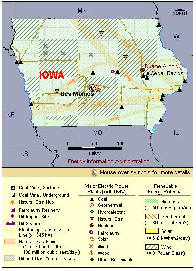

State Overview
There is one operating nuclear power plant in Iowa:
Duane Arnold in Linn County
- The Duane Arnold reactor is the 8th smallest commercial reactor in the United States.
- Duane Arnold is one of five nuclear facilities owned by FPL.
Contribution of Nuclear Power
Of the 31 states with nuclear power, Iowa has the smallest net summer capacity with a little over 550 MW.
Nuclear power represents less than 5% of Iowa’s total electric capacity, but it produces over 10% of the State’s electricity generation, second only to coal.
Until 2007, Iowa was a net electricity importer.
License Renewals
- Duane Arnold: On October 1, 2008, a license renewal application was submitted for the Duane Arnold reactor. The current license expires February 2014.
Permanently Shutdown Commercial Reactors
- Dresden (unit 1) in Grundy County
- Zion (units 1 and 2) in Lake County

|
| Iowa Total Electric Power Industry, Summer Capacity and Net Generation, by Energy Source, 2008 |
| Primary Energy Source |
Summer Capacity
(MW) |
Share of State Total
(Percent) |
Net Generation
(Thousand MWh) |
Share of State Total
(Percent) |
| Nuclear |
580 |
4.2 |
5,282 |
10.0 |
| Coal |
6,928 |
50.5 |
40,410 |
76.1 |
| Hydro and Pumped Storage |
142 |
1.0 |
819 |
1.5 |
| Natural Gas |
2,395 |
17.5 |
2,163 |
4.1 |
| Other1 |
- |
- |
s |
* |
| Other Renewable1 |
2,650 |
19.3 |
4,251 |
8.0 |
| Petroleum |
1,017 |
7.4 |
161 |
0.3 |
| Total |
13,711 |
100.0 |
53,087 |
100.0 |
| Iowa Nuclear Power Plants, Summer Capacity and Net Generation, 2008 |
| Plant Name/Total Reactors |
Summer Capacity
(MW) |
Net Generation
(Thousand MWh) |
Share of State Nuclear
Net Generation
(Percent) |
Owner |
Duane Arnold Energy Center
Unit 1 |
580 |
5,282 |
100.0 |
NextEra Energy Duane Arnold LLC |
1 Plant
1 Reactor |
580 |
5,282 |
100.0 |
|
|
Plant Profiles
Duane Arnold Energy Center
| Duane Arnold Energy Center |
| Unit |
Summer Capacity
(MW) |
Net Generation
(Thousand MWh) |
Summer Capacity Factor
(Percent) |
Type |
Commercial Operation Date |
License Expiration Date |
| 1 |
580 |
5,282 |
104.0 |
BWR |
2/1/1975 |
2/21/2014 |
| |
580 |
5,282 |
104.0 |
|
|
|
Operator: FPL Energy Duane Arnold, LLC
Location and Service Territory: The single-unit Duane Arnold Energy Center (DAEC) is located on a 500-acre site on the western bank of the Cedar River near Palo, Iowa.
Construction Cost: $1.165 billion (2007 USD)
Staffing: Approximately 500 employees
Reactor Descriptions: The Duane Arnold unit is a General Electric Type 4 boiling water reactor.
Cooling System: Duane Arnold is cooled by two mechanical draft cooling towers supplied by water from the Cedar River.
see also:
more annual nuclear statistics
projected electricity capacity to 2035
international
electricity statistics
|
|